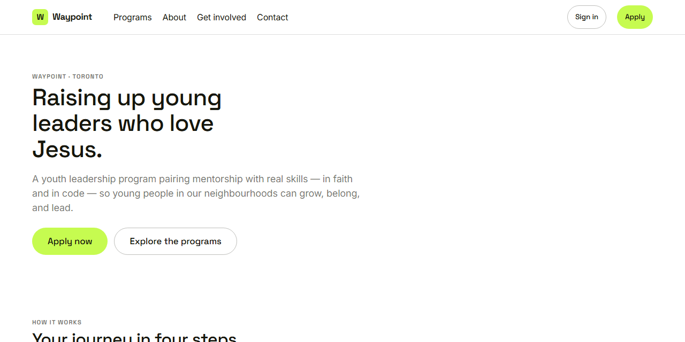
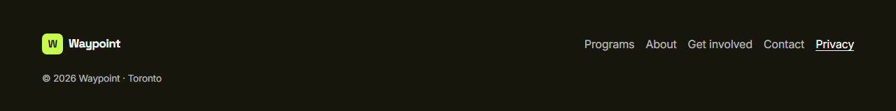
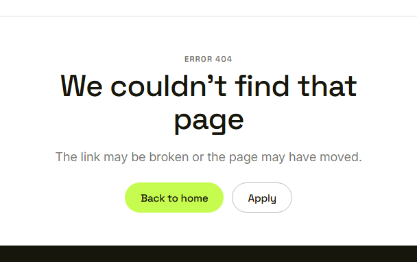
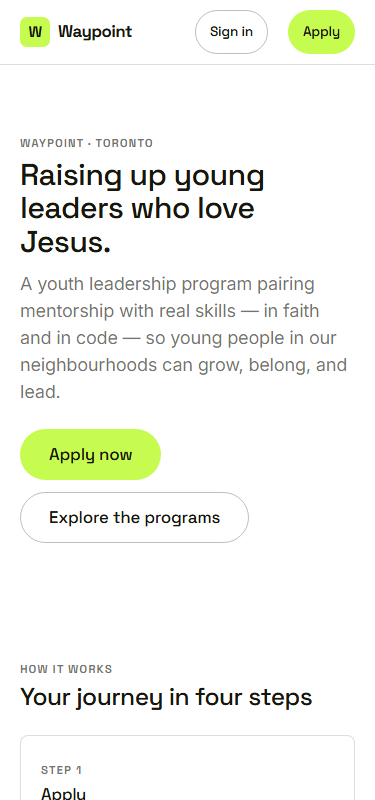
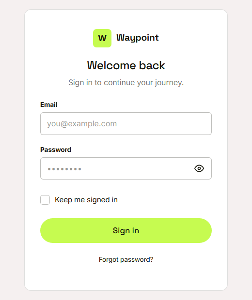

Waypoint · Video 016
Finding your way around the public site
The front door of Waypoint
The top menu

Programs, About, Get involved, Contact, Sign in, Apply
The footer

The same links, plus Privacy
A missing page

We couldn’t find that page
On a phone

The page rearranges itself
Sign in is a separate page

Sign in leads to the sign in page
Things to remember
Public pages open without signing in
Menu and footer are on every page
A missing page shows a helpful message
The layout adapts to a phone